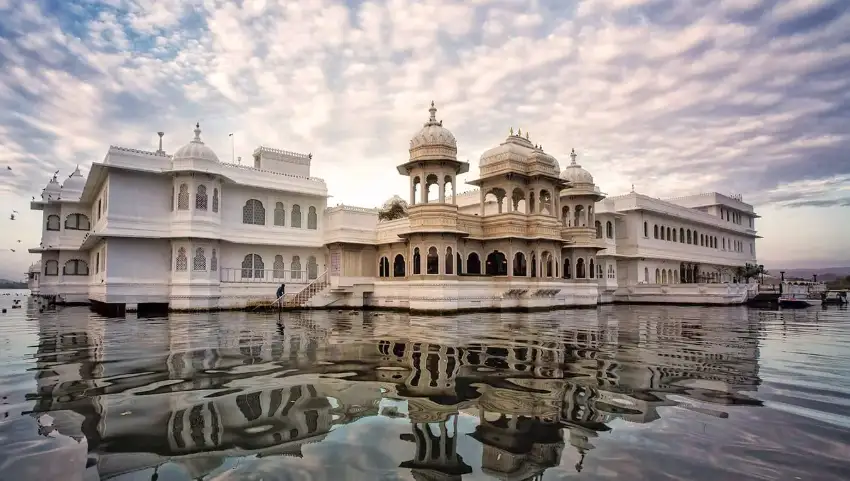
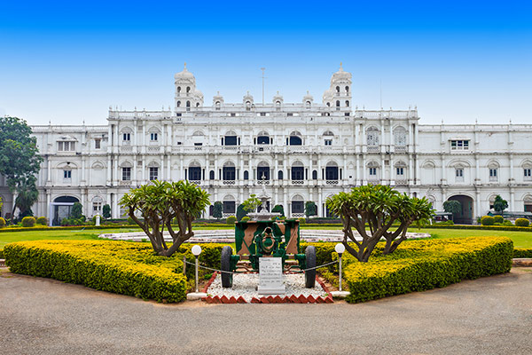
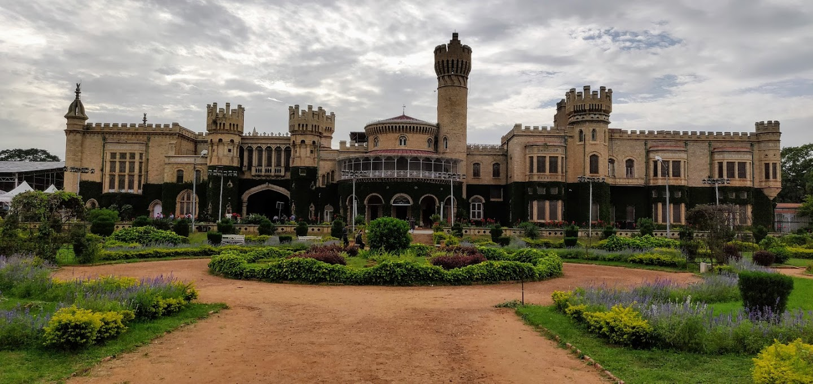
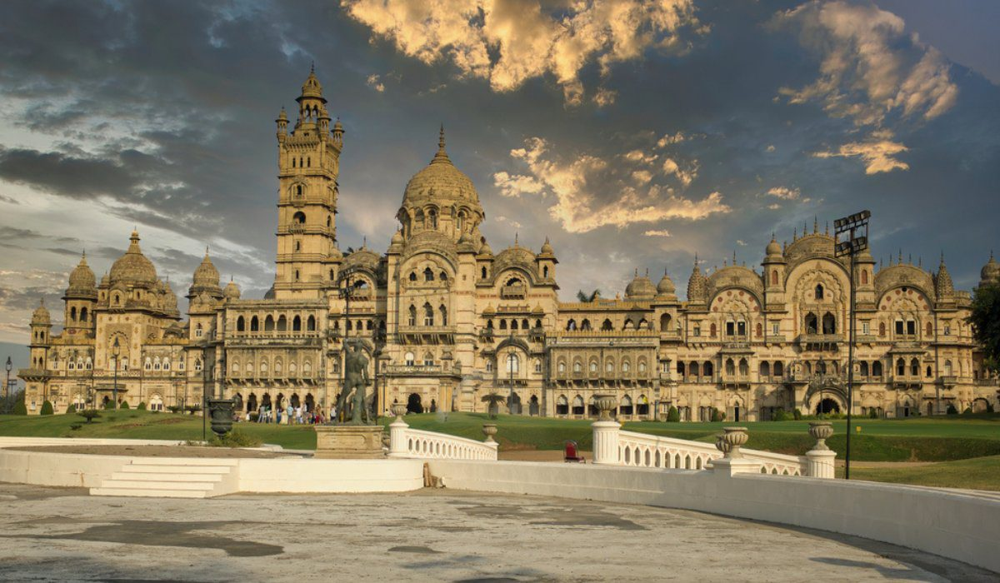
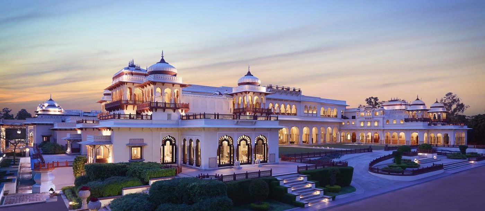
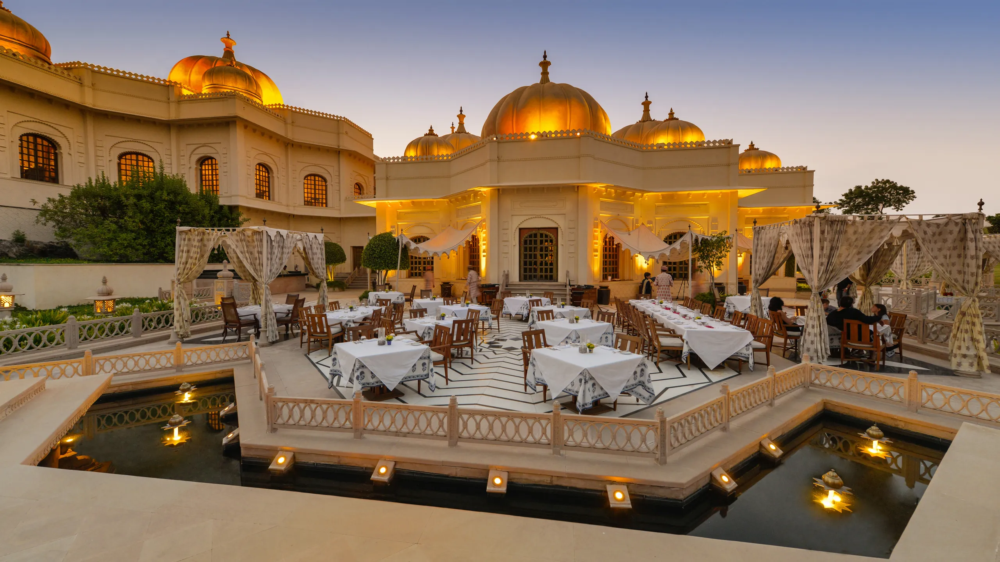

FAMOUS PALACES IN INDIA
Taj Lake Palace, Udaipur.

About Tajlake palace
Lake Palace (formerly known as Jag Niwas Palace) is a former summer palace of the royal dynasty of Mewar, now operated as a hotel. The Lake Palace is located on the island of Jag Niwas in Lake Pichola, Udaipur, India, and its natural foundation spans 4 acres (16,000 m2).[1] The Jag Niwas palace was constructed of white marble circa 1743–1746 by Maharana Jagat Singh II, the 62nd custodian of the House of Mewar. The palace, built to look like it is floating on the lake, was extensively used as a summer retreat for the Mewar royal family. Currently, IHCL is managing the hotel and has done so for the last 50 years. The palace has attained global fame for its appearance and as a location for several hit movies.
Jai vilas palace, Gwalior

About JaiVilas Palace
The Jai Vilas Palace is a fine example of European architecture. Initially constructed to accommodate King Edward VII and Queen Mary during their stay in India, the palace aimed to demonstrate the Scindia's influence and status during the British Raj. It was designed and built by Lt. Col. Sir Michael Filose (1832–1925),[2] the Chief Secretary and Director of Public Instruction of Gwalior.[3] The palace is a combination of the architectural style of the Mughals and the Medici. It is a combination of architectural styles, the first storey is Tuscan, the second Italian-Doric and the third Corinthian. The area of the Palace is 124,771 square feet and it is known for its large Durbar Hall. The interior of the Durbar Hall is decorated with gilt and gold furnishings and adorned with a huge carpet and gigantic chandeliers. It is 30 metres (100 ft) long, 15 metres (50 ft) wide and 12 metres (41 ft) in height.
Mysore Palace,Karnataka

About Mysore Palace
Bengaluru Palace is a 19th-century royal palace located in Bengaluru, Karnataka, India, built in an area that was owned by the Rev. John Garrett, the first principal of the Central High School in Bangalore. The palace was commissioned for the Maharaja of Mysore, Chamarajendra Wadiyar X, and currently belongs to the current head of the Wadiyar dynasty, Yaduveer Krishnadatta Chamaraja Wadiyar.
Laxmi Vilas Palace

About Laxmi vilas Palace,Vadodara
The Lakshmi Vilas Palace (Gujarati: લક્ષ્મી વિલાસ મહેલ) in Vadodara, Gujarat, India, was designed and constructed in 1890 by the British architect Charles Mant for the Gaekwad family, a prominent Maratha family, who ruled the Baroda State.[1][2] Lakshmi Vilas Palace was styled on the Indo-Saracenic Revival architecture, built by Maharaja Sayajirao Gaekwad III in 1890 at a cost of £6,383,155 (₹76,50,00,000) reflects Sayajirao's vision of blending Indian tradition with European modernity.
Rambagh Palace, Jaipur

About Rambagh Palace
The Rambagh Palace in Jaipur, Rajasthan is the former residence of the maharaja of Jaipur located 5 miles (8.0 km) outside the walls of the city of Jaipur on Bhawani Singh Road. It was constructed in 1835, and was originally built as a garden retreat for a queen’s handmaiden, later serving as a royal guesthouse and hunting lodge. In the early 20th century the building was expanded into a grand palace which became the principal residence of Jaipur’s ruler, Maharaja Sawai Man Singh II. After Indian independence, the Maharaja converted Rambagh Palace into India’s first luxury "palace hotel", and in 1972 its management was handed over to Taj Hotels, which preserved its architectural heritage while upgrading it to a five-star hotel. Today Rambagh Palace is often called the "Jewel of Jaipur". It is noted for its Indo-Saracenic architecture ornate gardens, and rich connections to Jaipur’s royal history.
Taj Falaknuma Palace, Hyderabad

About Taj Falaknuma Palace
Falaknuma is a former palace and currently a luxury hotel in Hyderabad, Telangana, India. It originally belonged to the Paigah family, and was later owned by the Nizam of Hyderabad.It is on a hillock and covers a 13-hectare (32-acre) area in Falaknuma, 5 kilometres (3.1 mi) from Charminar. Built by Nawab Sir Viqar-ul-Umra, Prime Minister of Hyderabad state and the uncle and brother-in-law of the sixth Nizam.Falak-numa means "Like the Sky" or "Mirror of Sky" in Urdu. At the time of its completion in 1893, it was the tallest building in Hyderabad. The palace post renovation carried out in 2010 today is a part of Taj Group and has been renamed as Taj Faluknama Palace.
Umaid Bhawan Palace, Jodhpur

About Umaid Bhawan Palace
Umaid Bhawan Palace in Jodhpur, built between 1928 and 1943, is one of the world's largest private residences and a prime example of Art Deco design, commissioned by Maharaja Umaid Singh as a famine-relief project to provide employment. Located on Chittar Hill, the 26-acre palace is now a mixed-use property, housing the royal family, a luxury Taj hotel, and a museum
Udaivilas Palace, Udaipur

About Udaivilas Palace
It was constructed in the mid-19th century by Maharawal Udai Singh II, after whom it is named.It was built at a cost of over a lakh of rupees. It was later expanded by his descendants. Three new wings were added between 1940 and 1944.[4] It was originally a weekend retreat for the royal family from the 13th-century Juna Mahal.[4] Previously, the family resided at Juna Mahal; however, they relocated here in the mid-20th century.[5] During the princely era, a force numbering between 59 and 101 over the years was employed to mount guard at the Udai Bilas and the old palaces. It also provided escorts to the Maharawal and Maharani.
Amber Palace

About Amber Palace
Amber was a Meena state, ruled by a Susawat clan. After Kakil Deo defeated the Susawats he made Amber the capital of Dhundhar after Khoh. Kakil Deo was a son of Dulherai. In early times, the state of Jaipur was known as Amber or Dhundhar and was controlled by Meena chiefs of five different tribes. They were under suzerainty of the Bargurjar Rajput Raja of Deoti. Later a Kachhwaha prince, Dulha Rai, destroyed the sovereignty of Meenas and also defeated Bargurjars of Deoli and took Dhundhar fully under Kachwaha rule. The Amber Fort was originally built by Raja Man Singh. Jai Singh I expanded it in the early 1600's. Improvements and additions were made by successive rulers over the next 150 years, until the Kachwahas shifted their capital to Jaipur during the time of Sawai Jai Singh II, in 1727. In the medieval period, Amer was known as Dhundar (meaning attributed to a sacrificial mount in the western frontiers) and ruled by the Kachwahas from the 11th century onwards – between 1037 and 1727 AD, until the capital was moved from Amer to Jaipur.The history of Amer is indelibly linked to these rulers as they founded their empire at Amer.